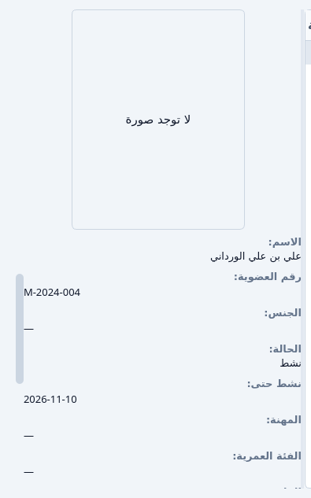
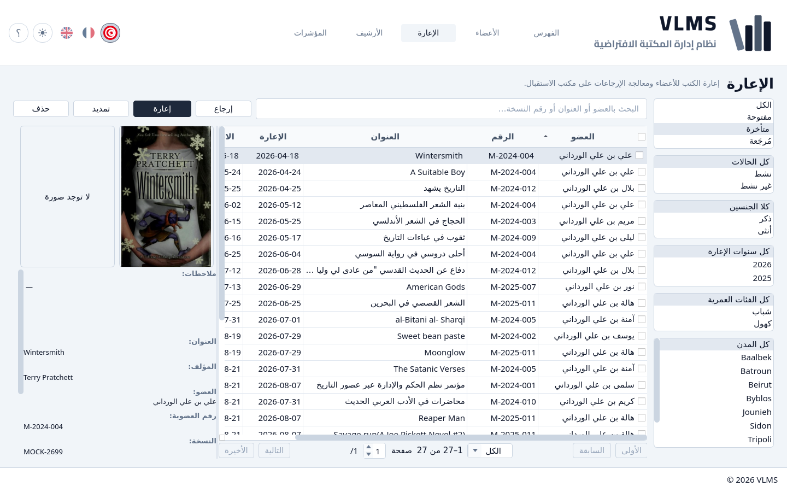
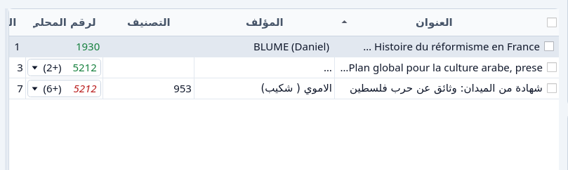

المرجع
الحقول، والحالة، وحالات الإعارة، والرقم المحلي.
حقول الكتاب
تبويب الكتاب:
- العنوان — مطلوب.
- المؤلف
- الناشر
- التصنيف — واحد، أو (بدون). التصنيفات… تفتح قائمة التصنيفات.
- ISBN
- تاريخ النشر
- مكان النشر
- الصفحات
- اللغة — مطلوبة. عربي، فرنسي، إنجليزي، وبقية اللغات المعروضة، أو لغة أخرى تُكتب.
- الأبعاد
- الوصف — من صورة يستطيع ملء هذا، والعنوان والمؤلف، من صورة واضحة للكتاب. قد يكون غير متاح.
- الغلاف — اختيار صورة الغلاف…
تبويب النسخ، سطر لكل نسخة:
- الرقم المحلي — رقم المكتبة لهذه النسخة. انظر الأرقام المحلية.
- الرقم العام — يُملأ من الرقم المحلي حين تُحفظ النسخة.
- الرصيد — عربي أو أجنبي، تبعاً للغة الكتاب.
- الرقم المركزي — الرقم الوطني، إذا كان للنسخة واحد. المكتبة لا تنشئه.
- التصنيف
- الموضوع
- الفهرس
- المكان
- الجرد
- التعويض
- ملاحظات
- الحالة
إضافة نسخة تضيف سطراً. حذف النسخة يؤرشف السطر المظلّل. النسخة التي ما زالت خارجة لا تُحذف.
حقول العضو
- رقم العضوية — يعطيه التطبيق، ولا يُعدَّل.
- الحالة — نشط أو غير نشط. انظر حالة العضو.
- نشط حتى — آخر يوم يكون فيه العضو نشطاً. التطبيق يضعه. أنت تقرأه.
- الاسم — مطلوب.
- اللقب — مطلوب.
- تاريخ الميلاد — مطلوب، يُختار يوماً ثم شهراً ثم سنة. الفئة العمرية تتبعه: دون الثلاثين شباب، وعيد الميلاد الثلاثين كهول. التاريخ المستقبل يُرفض.
- الجنس
- المهنة
- البريد الإلكتروني
- الهاتف
- العنوان
- المدينة
- الصورة — اختيار صورة…
- صورة الهوية — اختيار صورة الهوية…
- ملاحظات
حالة العضو
العضو نشط في يوم إذا كان نشط حتى ذلك اليوم أو يوماً بعده. وإلا فالعضو غير نشط.


تسجيل عضو، أو إعادة الحالة إلى نشط، يضع آخر يوم نشاط بعد سنة ناقص يوم. اختيار غير نشط ينهيه أمس. لا يستعير إلا عضو نشط. إعارة شاشة الإعارة لا تعرض أحداً غيره.
لا شيء يغيّر الحالة من تلقاء نفسه حين يمضي آخر يوم نشاط. في المرة التالية التي يُفتح فيها العضو، الحالة تقرأ غير نشط من قبل.
حالات الإعارة
الإعارة في واحدة من هذه الحالات الثلاث.
- مفتوحة — لم تُرجع، والاستحقاق اليوم أو بعده.
- متأخرة — لم تُرجع، ويوم الاستحقاق مضى.
- مُرجَعة — النسخة عادت.
مفتوحة لا تشمل متأخرة. مرشّح الإعارة وبلاطة المؤشرات بالاسم نفسه يتبعان هذا التقسيم.


الإعارة 14 يوماً، من اليوم الذي تخرج فيه النسخة. يمكن تغيير يوم الاستحقاق قبل حفظ الإعارة، ومرة أخرى بـتمديد ما دامت النسخة خارجة.
حي، ومؤرشف، ومحذوف نهائياً
السجل الحي في الفهرس أو الأعضاء أو الإعارة. حذف يؤرشفه: يغادر تلك القائمة ويذهب إلى الأرشيف. يمكن أن يعود بـاسترجاع.
حذف نهائي لا يوجد إلا في الأرشيف، وفقط بعد أن يسمح الترتيب. بعد ذلك السجل زال ولا يمكن استرجاعه.
الإعارة المؤرشفة ما زالت تُحسب. ما زالت تمنع حذف عضو أو نسخة نهائياً، وما زالت تظهر في سجل الإعارات لكتاب أو لعضو.
الأرقام المحلية
الرقم المحلي هو رقم دخول المكتبة لنسخة. هو فريد بين النسخ الحية في الرصيد نفسه. الرقم المركزي هو الرقم الوطني للنسخة. المكتبة لا تنشئه، وهو ليس الرقم المحلي.
إذا كان للعنوان عدة نسخ، الخلية تبدأ برقم وتعدّ الباقي بين قوسين. الرقم الأول وحده هو الملوّن.


الأخضر على الرف. الأحمر والخط المائل خارجان. الخط المائل هو العلامة التي تبقى في الطباعة الرمادية، ولمن لا يميّز الأحمر من الأخضر.
الرقم التالي يُقترح لنسخة جديدة. الأرقام الحرة، التي تركتها فجوات أقدم، في القائمة نفسها ولا تُؤخذ إلا إذا اخترتها. الرقم الذي ما زال على نسخة مؤرشفة يُستعاد من الأرشيف. انظر إعادة استعمال رقم محلي.